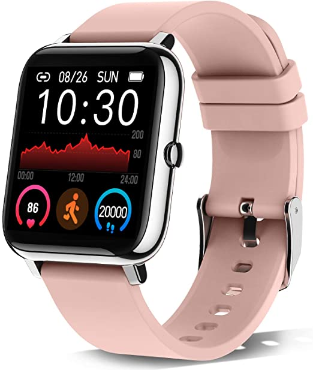
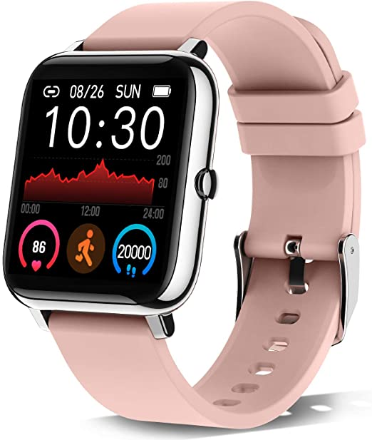

mohamed market 1
 

Compare with similar items
About this item
- multiple function: this smartwatch includes more practical functions, activity tracker (pedometer, calories, distance), heart rate monitor, sleep tracker, 8 sports modes, call notifications, sms and app messages (whatsapp, facebook, instagram ...), music and camera controller, sedentary reminders, alarm clock, stopwatch, weather, find your phone.
- 1.4 inch full touch screen: fitness watch with 1.4 inch tft lcd color touch screen display for exceptional hd quality. full touch screen technology making it easy and quick to view time and date. smart watch with 5 levels of brightness, even in the sun, you can clearly read the information. you can also customize the watch face to show your personality.
- heart rate monitor and pedometer: fitness tracker watch built in high performance motion sensor automatically monitors and detects your heart rate in real time, help you better grasp changes for your health and record accurately calorie consumption, distance, steps. you can view historical data in the app “Hero Band III”.
- sleep tracker and alarm clock: smart band can records your deep, light, and awake sleep patterns, and track your sleep quality status to get a better understanding of your health and and make reasonable adjustment on your lifestyle. you can also set an alarm to wake you up softly every day. with Donerton sports watch, your life will be easy and smart.
- ip67 waterproof: with the technology of ip67 waterproof, the smart watch will not be damaged even if you wash your hands, bathe and swim while wearing the fitness watch. meet your daily needs. (note: the smartwatch does not prevent hot water and sea water.) after connecting to the phone, you can also see the real time weather forecast.